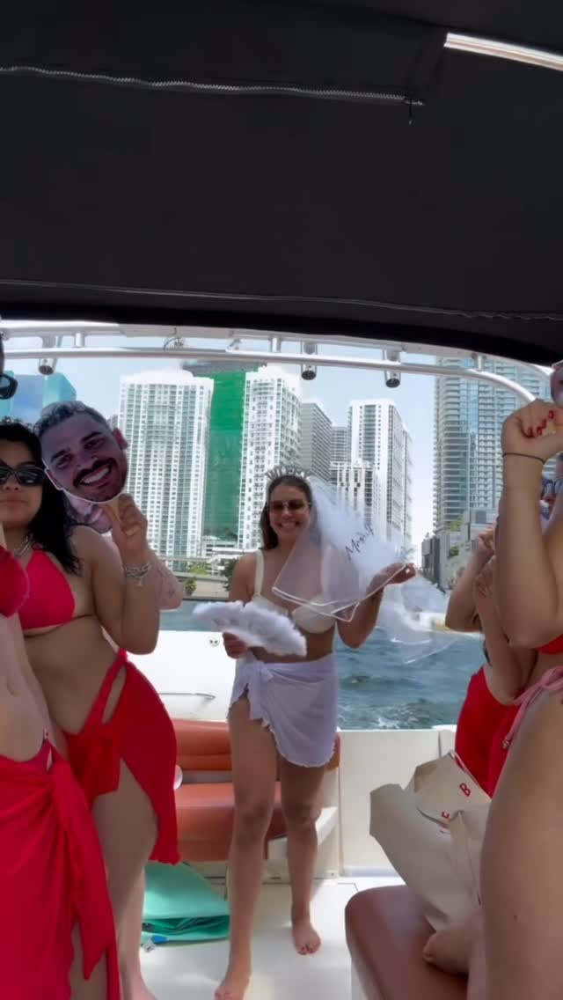
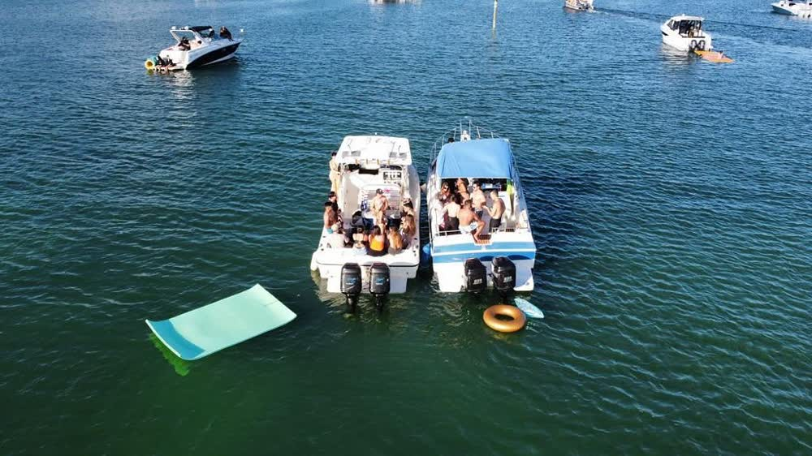
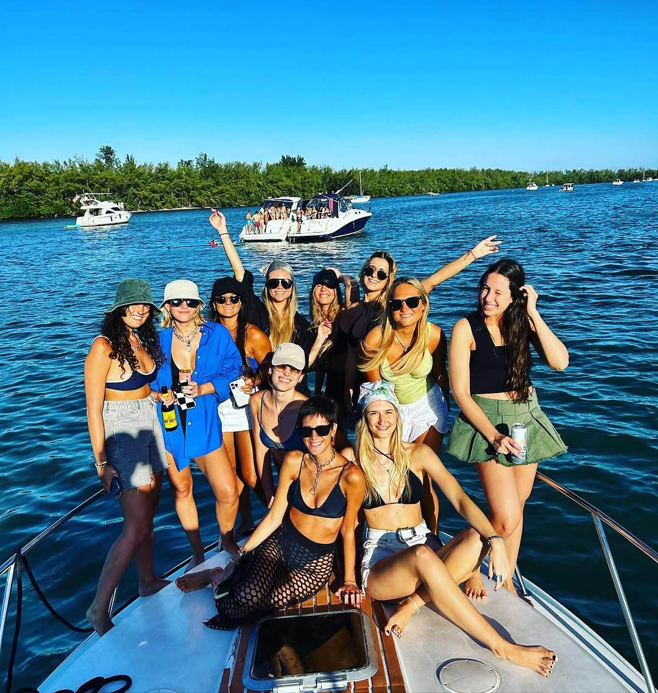

La novia no debería estar organizando nada
Un bote privado para hasta 13, un capitán que se encarga del día, y un chat que llevamos con quien esté armando la sorpresa — no con la novia.

El bote que de verdad sirve para una despedida
Trece personas es el número que decide todo. Descarta a la mayoría de los botes que se anuncian en Miami, y por eso las despedidas casi siempre salen en el Chris Craft 45 — el único de los tres con espacio en cubierta, baño con ducha y un camarote equipado para cambiarse.
Esa ducha importa más de lo que parece. Un día de seis horas en julio con un grupo que piensa salir en fotos es un día muy distinto si hay agua dulce a bordo y un lugar privado para usarla.

Lo planeamos contigo, no con la novia
Casi todas las despedidas que hacemos son sorpresa para alguien. Así que trabajamos por WhatsApp con quien esté organizando, no publicamos nada antes del día, y no llamamos a la novia para confirmar detalles.
Dinos qué se está guardando en secreto y nos acomodamos. Si el bizcocho tiene que aparecer en un momento exacto, o hay que colgar un cartel antes de que suba nadie, eso lo hacemos temprano — una hora antes, con el muelle todavía vacío.

Cómo suele ser el día
Casi todos los grupos quieren lo mismo: el banco de arena para nadar, un sitio tranquilo para comer, y la ciudad de fondo para las fotos. Con cuatro horas te dan dos de esas tres. Con seis te dan las tres sin que nadie ande apurado.
La piscina flotante se tira en el banco de arena y ahí se va la mitad del día. Trae tu playlist — la bocina ya está a bordo — y trae la comida y las bebidas que de verdad quieres, porque hay una nevera con hielo esperándolas.
Si el grupo pasa de trece, podemos amarrar un segundo bote al lado en el banco de arena para que siga siendo una sola fiesta y no dos. Pídelo al reservar, no el mismo día.
Preguntas sobre despedidas en bote
¿Cuántas personas caben en una despedida en bote?
Hasta 13 en el Chris Craft 45, y ese número incluye a todas las que suben. Es un límite de la Guardia Costera, no una preferencia. Si el grupo es más grande, podemos amarrar un segundo bote al lado en el banco de arena.
¿Podemos decorar el bote?
Sí, y preferimos hacerlo nosotros. Mándanos la decoración antes o tráela, y la dejamos puesta antes de que llegue el grupo — globos, cartel, banda, lo que hayan planeado. Nada que haya que clavar o pegar al casco.
¿Podemos llevar nuestra comida y bebidas?
Sí. A bordo ya hay nevera con hielo, agua y bocina. Trae lo que de verdad quieran comer y beber; no cobramos descorche ni hay que comprarnos nada.
¿Con cuánta anticipación hay que reservar?
Los fines de semana de verano se llenan con semanas. Una despedida normalmente gira alrededor de una fecha que no se puede mover, así que esa resérvala temprano. Entre semana casi siempre hay espacio, a veces la misma semana.
Dinos la fecha y quién manda de verdad
Te devolvemos un solo número con bote, capitán y gasolina — y dejamos a la novia fuera del chat si ese es el plan.
Otras celebraciones
Cumpleaños en bote
El bizcocho en frío, tu playlist, y el motor apagado con el downtown detrás.
Paseo al atardecer
Cuarenta minutos buenos, calculados hacia atrás desde el sol. El paseo más corto.
Día en el banco de arena
Agua a la cintura, arena blanca debajo, y la piscina flotante afuera.
Paseo en familia
Sombra todo el día, chalecos de niño de serie, y nadie con prisa.
Fotos con el skyline
Star Island, las casas grandes, y la hora en que la luz cae sobre la ciudad.
Eventos corporativos en el mar
Hasta 13, reservado con el capitán, con factura, y sin agencia de eventos en el medio.
Noches románticas en el mar
El bote entero para dos, la mesa de la bañera, y un capitán que no sale en las fotos.
Esparcir cenizas en el mar
Un bote privado más allá de las tres millas, y todo el tiempo que necesites con el motor apagado.